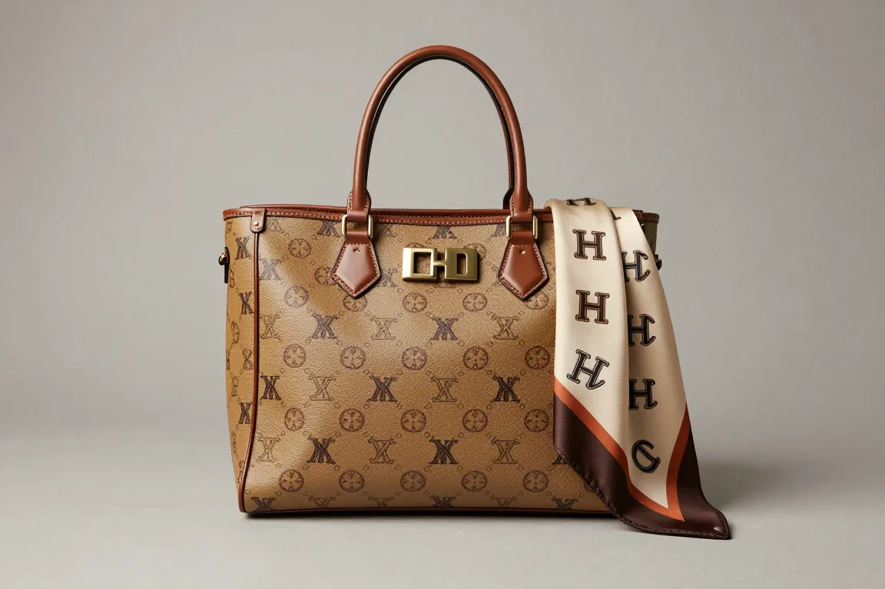

mote · 1985–2005 · også: Designer-logomote, Monogramvesker og belter
Tilbehør som bærer et merke over hele overflaten. Eksempler er en monogramgjentakelse på belagt lerret, store metallbokstaver på et belte og en logo på et skjerf. Merket er designet, og det viser status.

Kjerneidé
Produsentens merke er ornamentet, og bæreren viser en plass i verden med det.
Designprinsipper
Gjenta merket over hele overflaten i rader, 2 til 4 cm høyt.
Trykk eller vev merket i en tone som kontrasterer mot bunnen.
Bruk et belagt lerret som viser trykket og slites godt.
Sett en stor metallbokstav eller et dobbeltmerke som spenne eller lås, 4 til 8 cm bredt.
Før merket fra vesken til beltet, lommeboken og skjerfet, slik at settet matcher.
Hold skinnkantene i en enkel brun eller sort for å ramme inn trykket.
Plasser merket slik at det leses på 5 m avstand.
Lag en kopi, en remiks eller et tilpasset stykke i samme logikk, på gaten.